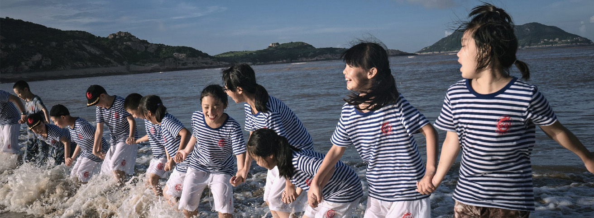
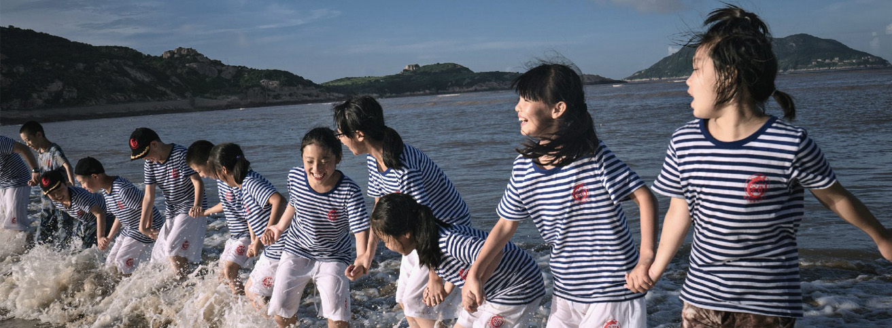
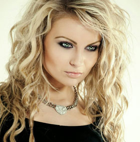

NEW LIST新闻中心
清摄影，让您感受摄影的魅力
- 热点问题
- 最新动态
- 服务贴士

人物拍摄技巧

户外拍照的美资

静物拍摄技巧

如何让照片拍的更自然

摄像焦距调整

拍照笑姿秘籍
超越时尚局限
清摄影，让你感受摄影的魅力!
欧文·佩恩对顶级时尚杂志《Vogue》来说，是最为重要的、最具发现力、和最会讲故事的摄影师。但是很讽刺的是：他成为摄影师是一个偶然！
新吉普赛人
清摄影，让你感受摄影的魅力!
instagram上的王红，瑞典人Lillwihln喜欢用iphone创造出旅行中的特殊时刻，虽然路途的风景很一般，你也仍然可以成为照片中最抢镜的主角。
为夏天旅行开脑洞
清摄影，让你感受摄影的魅力!
instagram上的王红，瑞典人Lillwihln喜欢用iphone创造出旅行中的特殊时刻，虽然路途的风景很一般，你也仍然可以成为照片中最抢镜的主角。
6月份开始北京婚纱摄影行业进入了婚纱照拍摄的旺季，新人在拍摄婚纱照之前最关心的除了北京婚纱摄影哪家好，北京拍婚纱照哪家好之外，婚纱摄影工作室的婚纱礼服好不好看也是新娘关注的重点，所以对于新娘来说，漂亮的婚纱礼服是重点，但只有美丽的婚纱礼服是不够的，如果搭配了一双不合适的鞋子，婚纱照就会黯淡许多，所以拍婚纱照时穿什么鞋也是需要格外关注哦! 今天北京蒙娜丽莎婚纱摄影小编就为新人讲解婚纱照拍摄攻略中如何找寻最适合自己的鞋子，拍出最合适的婚纱照风格。
婚纱照怎样才能拍的更好看呢？新人在选择婚纱摄影工作室和拍婚纱照的过程中，总有一些或大或小的问题接踵而来，如何处理好这些问题为自己选择优质的婚纱摄影工作室和拍好婚纱照呢？除了具体的事情上要做准备外，心理上也要做好充分的准备，在拍婚纱照的具体环节上应该如何做呢，北京蒙娜丽莎婚纱摄影小编为新人们分享一下拍婚纱照的秘诀！让您的婚纱照能拍出更好的效果。
大多数人拍婚纱照都追求自然清新的风格，但是很多新人拍婚纱照的时候表情都是僵硬的，显得不自然，那怎么拍出自然的婚纱照，轻松面对镜头了？想要拍出不一样的婚纱照就来看看北京蒙娜丽莎婚纱摄影小编分享的以下几点吧。
简洁的婚纱